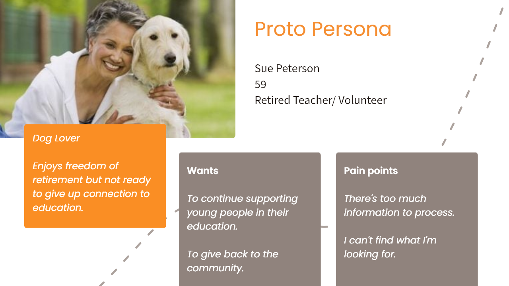
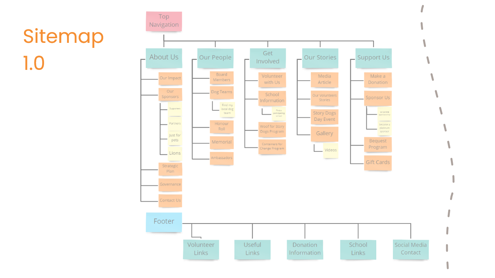
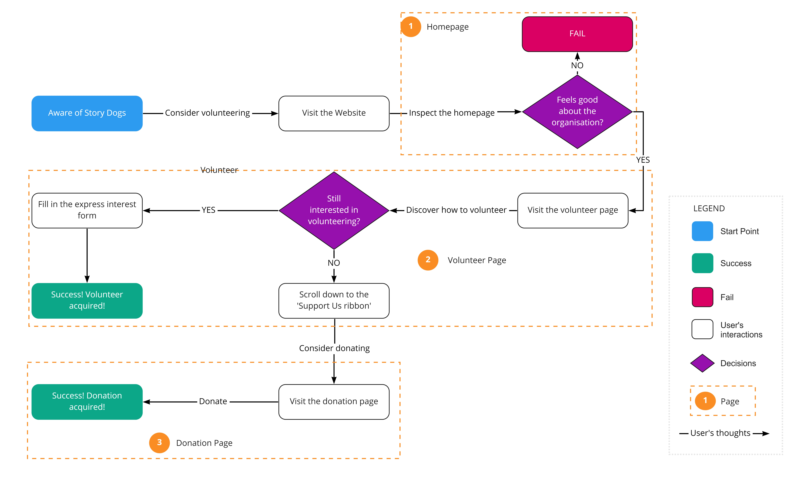
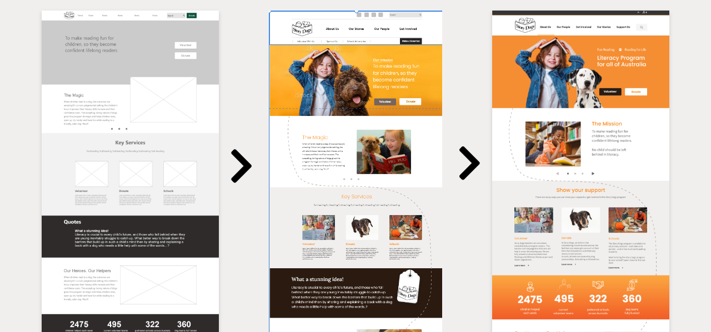
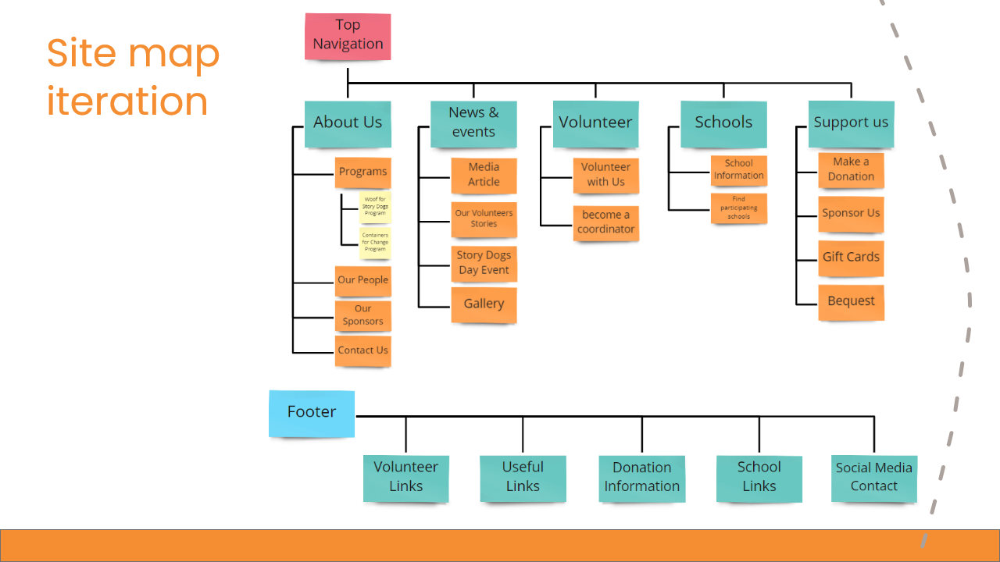

Overview
As part of a three weeks group project at the University of Adelaide's UX/UI Bootcamp, we had to choose and redesign a website for a not-for-profit organisation.
We decided to go with Story Dogs, an Australia-wide volunteer-based literacy program, focuses on building reading and literacy confidence in primary-age students through fun reading activities with a volunteer dog.
The goal of this project was to update their website to create a better user experience. Specifically, we wanted to make it easy for potential supporters of the organisation to navigate through the website and be able to find the information that they need.
Identifying Problems
By making a heuristic evaluation checklist, we were able to identify the issues within the website:
- The website doesn't practice content chunking very well, make it hard to scan and overwhelm the audience with text.
- The current information architecture of the page does not fully make sense and is unintuitive. Furthermore, the website has no breadcrumbs and has a lot of secondary pages that can potentially be merged together.
We then tried to validate the initial findings by a set of usability tests. In the process of developing the testing plan, we determined that our target users should be someone who are interested in the organisation and wanting to support the cause. This is when we created "Sue Peterson", our proto persona, by combining the findings above and the information about the volunteers that is available on their website.
Having Sue made it easier for us to figure out our testing plan: we know that Sue wants to learn more about the organisation. Then she might want to know about the volunteering process so that she could reconnect with her teaching career. She might also be interested in knowing which schools near her are partnering with Story Dogs.
After finalising the testing plan, we recruited 6 participants that had worked with a NFP before and have a pet for the usability test. Beside validating the UX and UI issues of the website, we also wants to know what users think when they first look at the website (general thoughts on the cause and how well the website has conveyed it)
Notable quotes from the test:
Core layout is horrible. I can see the good intentions behind it, however it could be done better.
Sounds like a good initiative, the website doesn't sell what it does though.
If I see a block of text, I don't want to read it.
Key Insights:
- Navigation system is overwhelming and have unintuitive labels.
- Lack of information hierarchy, particularly on the homepage.
- Difficult to locate key information due to excessive text and poor content layout.
- Lack of contrast and consistency with buttons.
A New Sitemap
To fix the navigation system, we started to "pull apart" the current sitemap and start re-grouping them together into categories that make sense to us.
From the original 9 primary items on the navigation bar, we trim it down to just 5. We also significantly cut down the number of secondary items by merging them together. For example, the website has 7 individual pages for each states and territories when it comes to finding participating school location. We decided to merge all of them together under a page called "Find participating schools" and have a search by postcode function on top of that page.
User Flow
Because of the short time frame nature of this challenge, we couldn't redesign all the pages on the website. We decided to flesh out Sue's story and followed it to figure out what are the key pages that we want to prioritise. After many iterations, the user flow was finalised:
From here, we knew that we want to work on redesigning the homepage, volunteer page, donation page. However, the real challenge here is that how can we make sure the user will go all the way and either join as a volunteer or make a donation?
For the first check point (our homepage), we want to do a better job at content chunking to captivate the visitors and build a better layout that tell users about the journey of Story Dogs. We also need to build a better navigating system for users to find important information, such as the about us page and the participating schools information page.
Again, for the second check point, we want to break down the contents and make it easier to digest for the users. We also want to suggest other options to support the organisation at the end of this page, such as donating, which will lead user to the donation page.
Prototyping
We started wireframing once we know what pages we want to focus on. After figuring out the basic layout of all the pages, we started composing the UI style guide before moving onto the high-fidelity mockups.
During this process, we conducted multiple 5-seconds-tests where we quickly showed the pages to a person outside of the team for unbiased opinions on the design.
Mockups

Homepage
The layout of this page was designed with the objective of explaining what Story Dogs' mission is and what have the organisation achieved so far. Throughout the page, there are multiple locations where user can learn more about our story, as well as how to support us.
Volunteer
The original design has a long check list of how to become a volunteer. Here we trimmed it down to a button that will open a pdf file, detailing all the information that user need to know before becoming a volunteer. As discussed in the user flow, we also have shortcuts to the donation page and the sponsor page.
Donation
Similarly, we also have a quick way for user to explore the volunteering option at the end on this page.
Participating Schools
This is where we condensed 7 individual pages into one. After enter the postcode and hit the search button, a list of nearby schools will be displayed on the page.
Usability Testing
After finalising the mockups, we conducted a set of 6 usability tests on our prototype. We reused the initial testing plan since the aim of this is to confirm whether we have improved the usability of the website (compare to the original website). To ensure that there is no bias, we also recruited new participants that have not seen the original website before.
Key findings:
The good:
- The prototype preserves the positive feeling towards the organisation.
- No complaints on the general layout of the page.
- Overlapping information throughout the page makes it easy to find where things are.
The bad:
- IA problems: 'School Information' doesn't seem like it fits under the 'Get Involved' tab leads to confusion on where to find it.
Iteration and Mobile
We worked on the IA problems and iterated our sitemap. Subsequently, we also fixed our navigation bar to reflect the new sitemap.
A mobile version of the website was created after we finished iterating the prototype:
Next Steps
- Connecting with Story Dogs to establish their future direction.
- Continue with the redesign process throughout the rest of the website.
- Validating our latest iteration with more usability tests